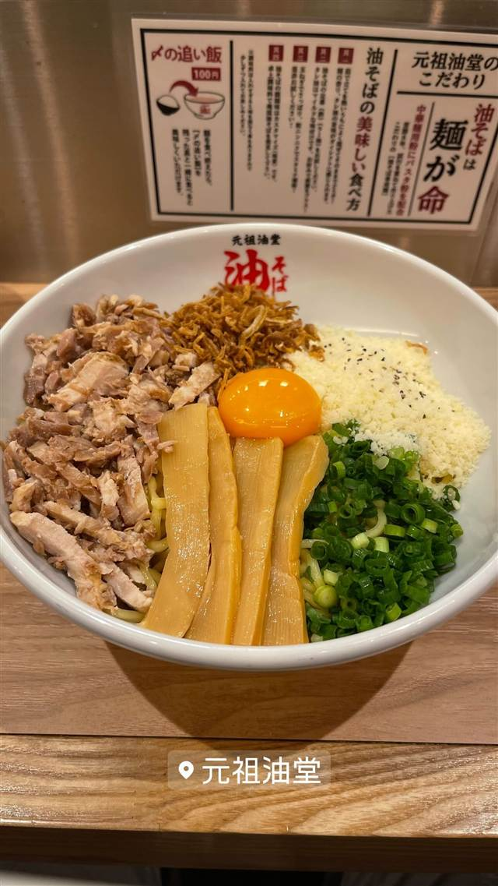

元祖油堂 川崎駅前店
8年かけて完成させた自家製麺、10種の調味料で味変できる油そば
元祖油堂
「町田商店」などを手がけるギフトホールディングスが展開する油そば専門店。8年かけて開発した自家製麺と、豊富な卓上調味料での味変が楽しめるのが特徴。
TRIVIA
豆知識
- 自家製麺の開発には8年もの歳月がかかった
- 卓上調味料が10種類以上そろい、途中で味を変えて楽しめる
REVIEWS
世間の評判
90.6ラーメンDB
無料の大盛サービスと甘めダレ
- 特盛や特大まで無料になるサービスの良さを評価する声が多い
- 甘みのある醤油ダレと滑らかな麺の相性を評価する人もいる
- 人気店で混雑時は外待ちになることがあるという声もある
ラーメンデータベース 口コミ15件・最新 2026-05
| 創業 | 2021年よりチェーン展開を開始（2025年時点で全国20店舗以上）。 |
|---|---|
| 系譜 | ラーメンチェーン「町田商店」「ラーメン豚山」などを展開する株式会社ギフトホールディングスの油そば専門ブランド。 |
| 看板 | 油そば。 |
| こだわり | パスタ用の粉と中華麺用の粉を配合し、8年かけて試行錯誤して完成させた自家製麺。特製だれに加え、卓上に10種類以上の調味料・薬味を用意し、自分好みに味変できる。 |
| どこから | 23区の外れ・近郊 |
| 営業時間 | 月〜日 11:00-03:00 |
| 定休日 | 不定休 |
| 場所 | 川崎駅 神奈川県川崎市川崎区駅前本町11-1 |
| メモ | 川崎駅前本町、カウンター中心の店舗。11時〜翌3時まで営業。 |
食べたもの：油そば
ひとりで入りやすい
NEARBY
近い店・同じ系統の店
-
 ★
まぜそば・油そば 本郷三丁目
中華蕎麦にし乃
メニューは2種類のみ、生姜香る肉厚ワンタン入りの中華そば
昼 ¥1,000～¥1,999 夜 ¥1,000～¥1,999
★
まぜそば・油そば 本郷三丁目
中華蕎麦にし乃
メニューは2種類のみ、生姜香る肉厚ワンタン入りの中華そば
昼 ¥1,000～¥1,999 夜 ¥1,000～¥1,999
-
 ★
まぜそば・油そば 亀戸駅
しののめヌードル
淡海地鶏と干し椎茸出汁、手もみ自家製麺の油そば
昼 ¥1,000～¥1,999 夜 ¥1,000～¥1,999
★
まぜそば・油そば 亀戸駅
しののめヌードル
淡海地鶏と干し椎茸出汁、手もみ自家製麺の油そば
昼 ¥1,000～¥1,999 夜 ¥1,000～¥1,999
-
 ★
まぜそば・油そば 亀戸
DURAMENTEI（ドゥラメンテイ）
白醤油と黒醤油、選べる2種スープと自家製ワンタン
昼 ¥1,000～¥1,999 夜 ¥1,000～¥1,999
★
まぜそば・油そば 亀戸
DURAMENTEI（ドゥラメンテイ）
白醤油と黒醤油、選べる2種スープと自家製ワンタン
昼 ¥1,000～¥1,999 夜 ¥1,000～¥1,999
-
 ★
まぜそば・油そば 稲荷町
さんじ
豪州でお好み焼き店を営んだ店主の自家焙煎煮干しラーメン
昼 ～¥999 夜 ¥1,000～¥1,999
★
まぜそば・油そば 稲荷町
さんじ
豪州でお好み焼き店を営んだ店主の自家焙煎煮干しラーメン
昼 ～¥999 夜 ¥1,000～¥1,999
-
 ★
まぜそば・油そば 東中神
自家製麺 まさき
水の綺麗な昭島を選んで出した二郎系の汁なしまぜそば
昼 ～¥999 夜 ～¥999
★
まぜそば・油そば 東中神
自家製麺 まさき
水の綺麗な昭島を選んで出した二郎系の汁なしまぜそば
昼 ～¥999 夜 ～¥999
-
 ★
豚骨 京急川崎駅
自家製麺 麺屋 利八
1日熟成させた自家製太麺と吊るし焼きチャーシューの鶏白湯
昼 ¥1,000～¥1,999 夜 ¥1,000～¥1,999
★
豚骨 京急川崎駅
自家製麺 麺屋 利八
1日熟成させた自家製太麺と吊るし焼きチャーシューの鶏白湯
昼 ¥1,000～¥1,999 夜 ¥1,000～¥1,999